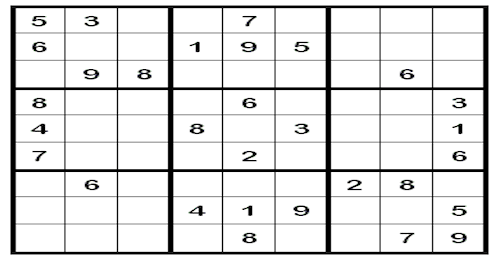

MY WORKS
Trust the Source

MySourceManager is a browser-based game built with HTML, CSS, and JavaScript, allowing players to manage and organize social media. It was developed during the FMX Game Jam at Stuttgart Media University.
RecycleMe
The RecycleMe app addresses the e-waste crisis by providing users with options to return, sell, or donate old devices, along with educational resources on proper e-waste disposal. The app's wireframe was created in Figma. It promotes sustainability and supports underserved communities by making recycling accessible and engaging, particularly for younger users. It includes features like easy drop-off options, educational tutorials, and tracks the impact of donations.
MoonFlo

MoonFlo is an all-inclusive menstrual tracking app designed to support women's well-being, featuring daily diary entries, affirmations, meditation, tracking, insights, and educational resources. This app was developed using React, JS, JSON, and HTML/CSS, leveraging APIs with an agile methodology over three sprints to prioritize mental health, self-care, and inner balance.
Multiplayer Sudoku

This project is a Java application enabling multiple users to play Sudoku, a logic-based number-placement puzzle where players fill a 9x9 grid. A server hosts a randomly generated Sudoku board with 25 empty spots and manages progress, while clients connect via TCP/IP to send updates, which the server can either accept or reject.
Plateformer Game with Unreal
This game programming project aimed to translate a game design concept into a functional script, providing experience in real-time applications and various aspects of game development. The UE4Editor was used to implement game design concepts, creating 3D environments and levels, while C++ was employed to handle game logic, character behavior, and collision detection.
Website Design for Arete Living Arts Foundation
This web design project focused on enhancing a non-profit organization's website using only HTML, CSS, and JavaScript to create a more engaging user experience. The upgraded site aimed to include dynamic elements like image sliders and interactive donation forms, along with a responsive design for cross-device optimization. The use of these technologies was intended to better showcase the organization's mission, increase awareness, and foster greater community involvement.